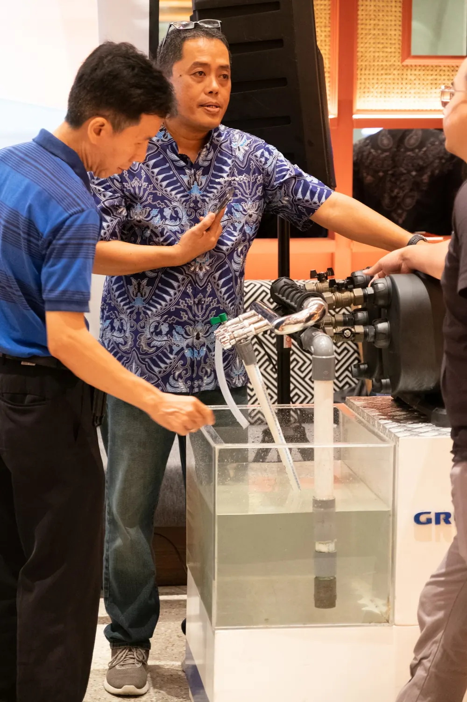
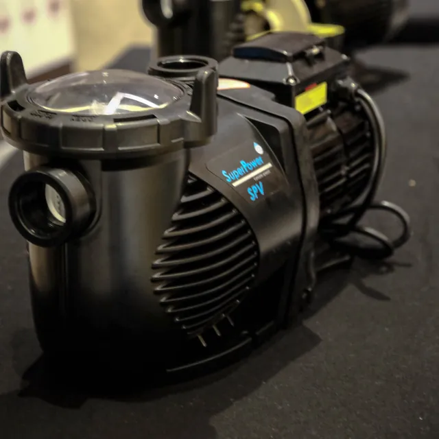
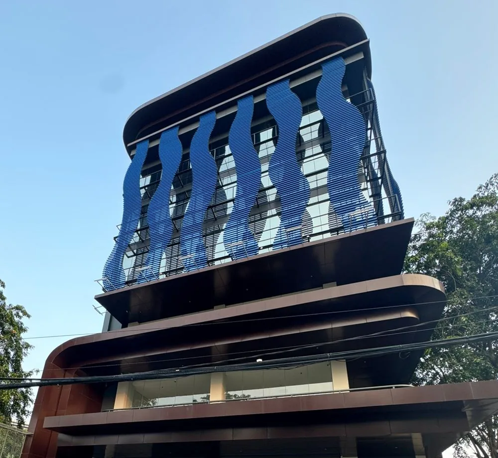
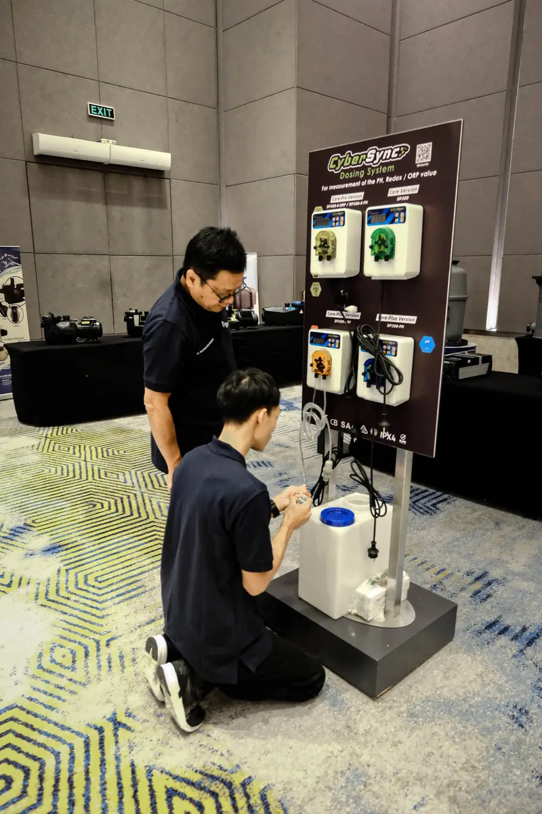
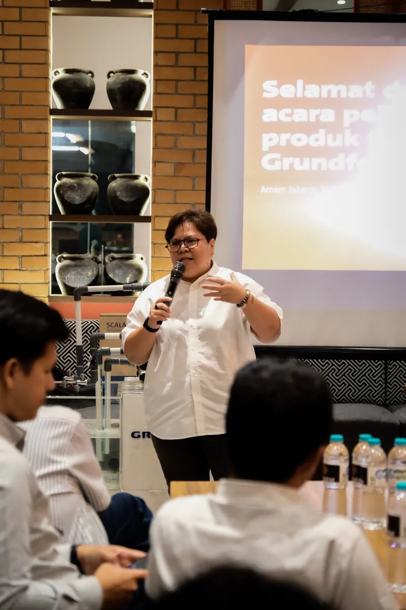
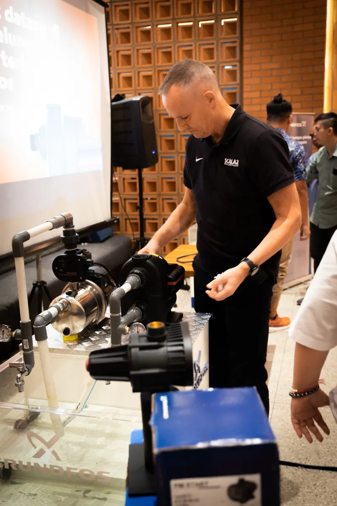
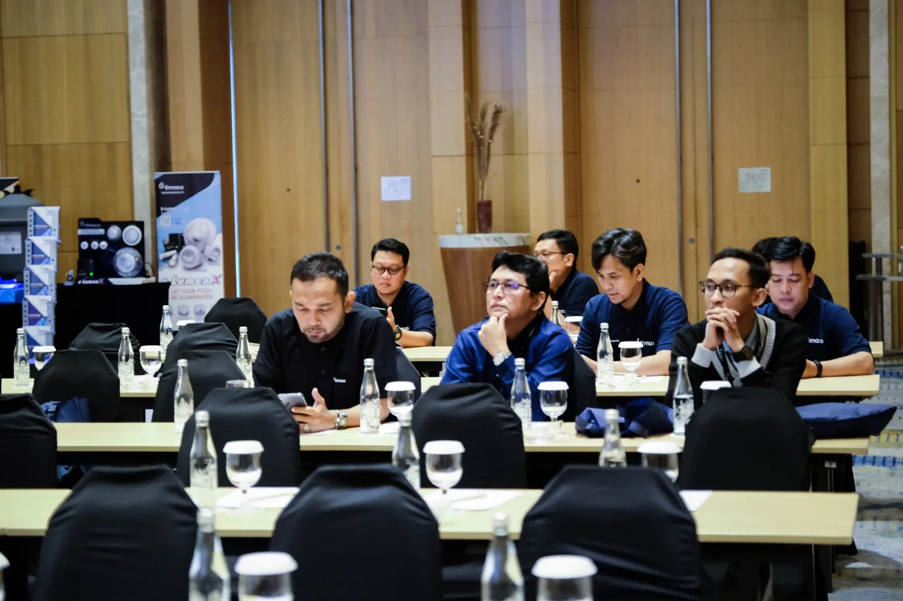

Menjembatani Teknologi Air Global dengan Keunggulan Lokal
GTI menghubungkan prinsipal teknologi air internasional dengan pasar Indonesia melalui lisensi merek, tata kelola merek, dan ekosistem terbuka mitra distribusi dan mitra pasar lokal.


Prinsipal Kami
Merek Global & Kemitraan Strategis
Cakupan kemitraan dapat berbeda untuk setiap merek. GTI mengelola setiap hubungan sesuai kerangka lisensi dan merek yang berlaku.

Tentang Kami
Gerbang Anda untuk Pasar Teknologi Air Indonesia
PT Gemilang Tirta Internusa adalah gerbang merek strategis yang menghubungkan teknologi air global dengan pasar Indonesia.
GTI mengelola hubungan dengan prinsipal, lisensi merek, standar produk, keaslian, serta tata kelola merek jangka panjang. Didukung pengalaman operasional grup sejak 1987, kami memadukan standar global dengan pemahaman praktis tentang pasar lokal.
- Tata Kelola Merek
- Menjaga integritas merek, standar, dan reputasi jangka panjang.
- Akses Pasar Terbuka
- Menghubungkan prinsipal dengan ekosistem mitra lokal terkualifikasi yang lebih luas.

Peran Strategis Kami
Yang Dikelola GTI
GTI menyediakan fondasi strategis bagi merek teknologi air internasional yang ingin masuk dan berkembang di Indonesia, didukung tata kelola yang jelas, konsistensi merek, dan akses ke ekosistem mitra lokal yang terbuka.
Lisensi Merek
Mengelola lisensi merek dan representasi prinsipal dengan tata kelola yang jelas.
Tata Kelola Merek
Menjaga keaslian, reputasi, dan konsistensi standar merek.
Standar & Penyelarasan
Menyelaraskan persyaratan merek global dengan standar yang berlaku dan kebutuhan pasar di Indonesia.
Penguatan Pasar
Menghubungkan prinsipal dengan distributor terkualifikasi, mitra teknis, dan kanal pasar di seluruh Indonesia.
Global → Lokal
Ekosistem Pasar yang Terbuka dan Terintegrasi
GTI berada di pusat ekosistem yang terbuka—menghubungkan prinsipal global dengan mitra distribusi, teknis, dan pasar yang terkualifikasi di seluruh Indonesia.
- Prinsipal
Prinsipal Global
- Teknologi
- Inovasi
- Standar Merek
- Gerbang Merek
PT Gemilang Tirta Internusa
- Lisensi
- Integritas Merek
- Standar
- Hubungan Prinsipal
- Ekosistem Mitra Terbuka
Mitra Distribusi & Pasar
- Distribusi
- Dukungan Teknis
- Akses Pasar
- Implementasi
- Pasar
Pasar Indonesia
- Residensial
- Komersial
- Perhotelan
- Industri
Keterlibatan Pasar
Dari Merek Global ke Pasar Lokal
GTI membantu prinsipal membangun relevansi pasar melalui pengenalan produk, berbagi pengetahuan, keterlibatan teknis, dan kolaborasi dengan jaringan mitra lokal yang terbuka.

Pengenalan Produk & Teknologi
Menciptakan konteks yang tepat bagi merek, teknologi, dan aplikasinya.

Transfer Pengetahuan
Mendukung prinsipal dalam berbagi pengetahuan produk dengan para pemangku kepentingan pasar lokal.

Keterlibatan Pasar & Mitra
Membangun hubungan dengan distributor, konsultan, kontraktor, dan profesional industri.
Sektor yang Kami Layani
Teknologi air global untuk proyek di berbagai sektor di Indonesia.
- Residensial
- Komersial
- Perhotelan
- Infrastruktur & Industri
Mengapa GTI
Berbekal Pengalaman, Terbuka untuk Kemitraan
GTI memadukan standar merek global dengan pengalaman industri grup dan pendekatan kemitraan yang terbuka—mendukung prinsipal sekaligus membuka beragam jalur pasar yang terkualifikasi.
- Berpengalaman
- Pemahaman pasar yang didukung grup
- 3
- Merek global dalam portofolio saat ini
- Terbuka
- Ekosistem distributor & mitra pasar
Standar Global
Standar dan reputasi merek internasional dikelola secara konsisten.
Pemahaman Pasar Lokal
Wawasan pasar yang praktis, dibentuk oleh pengalaman industri grup yang panjang.
Jaringan Mitra Terbuka
GTI tetap terbuka bagi distributor dan mitra pasar terkualifikasi yang sejalan dengan standar setiap merek.
Visi Kami
Menjadi gerbang paling tepercaya yang menghubungkan inovasi air global dengan kebutuhan lokal.
Dilandasi oleh
- Integritas
- Autentik & akuntabel
- Presisi
- Akurat & sesuai ketentuan
- Kolaboratif
- Dibangun atas dukungan bersama
- Keberlanjutan
- Andal untuk jangka panjang
Kemitraan
Bangun Kehadiran Teknologi Air Anda di Indonesia
Bersama GTI, hubungkan inovasi teknologi air global dengan peluang dan kebutuhan pasar Indonesia melalui kemitraan strategis yang berkelanjutan.
Informasi Kontak
Jika ingin bermitra segera, silakan temui kami secara langsung atau kirimkan email Anda.
Alamat Kantor
Jl. Danau Indah Raya Blok C-3/10
Sunter, Jakarta Utara 14360
DKI Jakarta, Indonesia
Telepon / WhatsApp
Jadilah Mitra Kami
Tinggalkan pesan Anda dengan mendetail. Mengirimkan pesan dapat langsung dijawab dalam jam kerja operasional bisnis.